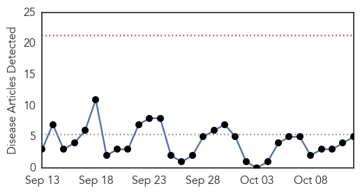
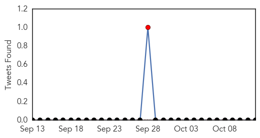
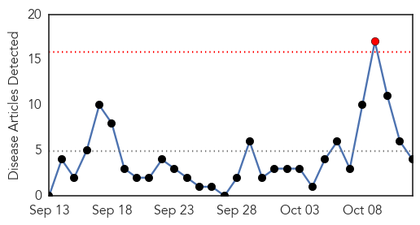
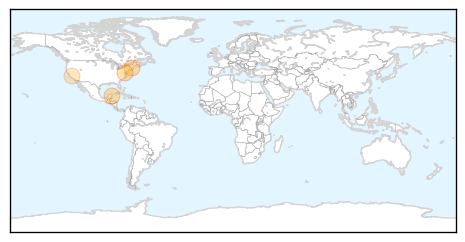

Meningitis
30-Day Web Trend
0 alerts, 0 warnings

30-Day Twitter Trend
1 alerts, 0 warnings

Article Locations

Article Confidences

Top Articles:
- 0.995
- Maine Faces Viral Meningitis Threat after 2nd Case in a Week
- 0.995
- Schoolchild In Cumberland Diagnosed With Viral Meningitis
- 0.993
- Schoolchild In Cumberland Diagnosed With Viral Meningitis
- 0.969
- Handwashing, communication with schools key in preventing spread of childhood diseases
- 0.948
- How Great A Threat Is It To Public Health?
Top Tweets:
-
No tweets found for Oct 12, 2015
Measles
30-Day Web Trend
1 alerts, 0 warnings

30-Day Twitter Trend
0 alerts, 0 warnings

Article Locations
Article Confidences

Top Articles:
Top Tweets:
-
No tweets found for Oct 12, 2015